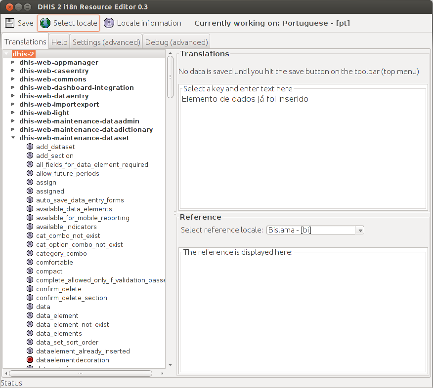

The i18n resource editor is Java desktop application which can be downloaded from http://www.dhis2.org/downloads . It requires that you have checked out the DHIS2 source code from Bazaar (check out http://www.dhis2.org/development if necessary) and have a Java Runtime Environment installed on your computer. On Windows, simly unpack the ZIP archvie and click the executable file. On Linux, extract the archive, navigate inside the extracted directory and invoke the following:
java -jar dhis-i18n-resourceeditor.jar
Press "Browse" when the application starts and select the path to the "dhis-2" directory inside your local copy (checkout) of the DHIS2 source code repository, followed by OK.
Next, select the destination locale which you will translate strings into. Remember that if you want to create or add to a general language translation, select e.g. "Portuguese - [pt]. If you want to create a country-specific translation, select e.g. "Portuguese - Brazil [pt_BR]. Locales which already have keys translated will show the text "Resources for this locale exist".
Select one of the web modules from the left hand side to translate, e.g. dhis-web-maintenance-dataset.
|  |
Once you have selected a module, click on a particular key from the left-hand side. A reference value for the key will be displayed in the lower right-hand pane, and the translation value will be displayed in the upper right-hand pane. Keys with missing values will be indicated with a red icon. If the value does not exist, simply add the translation there.
Once you have finished translating, make sure to press the "Save" button.